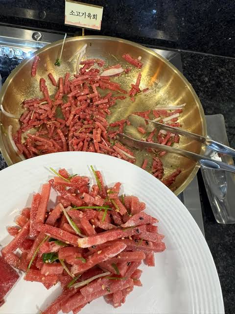

응 좆까 그딴거 없고 하객들은 신부 드레스 뭐 입었는지 기억도 못한다
육회가 꽝꽝 얼어서 나왔는지, 적당히 잘 녹아서 나왔는지가 더 기억이 많이 남으니까
개씨발 10군데 넘게 웨딩드레스 고른다고 시간/돈 쓰지 말고, 그 돈 아껴서 미래에 보태라
정작 신부 자신도 몇년 지나면 뭔 디자인 입었는지 까먹음
웨촬 사진첩도 씨발거 절대 안보니까 제발 사진추가 어쩌고 저쩌고 염병 하지말고, 그걸로 의견 갈린다고 예신 예랑끼리 싸우지 마라
업체들이 니들 이용해 먹는건데, 왜 싸움은 업체랑 안하고 부부끼리 하냐
돈이 썩어나는 애들이나 진짜 자기 행복을 위한거라면 뭘 해도 안말리지만... 거 들춰다 보지도 않을 사진, 남들에게 보여질 시선, 인스타에 올릴 피드에 내가 몇달 내지는 몇년동안 땀흘려 모은 청춘을 바치지 말란 소리임.
한국 사회가 뭐 남 시선 존나 신경쓴다 어쩐다 해도, 생각보다 관심 없고, 니들 잘사고 말고를 부러워할 사람도 생각보다 없음.
제발 현실의 나 자신을 위해 살아라.
인생에 단 한번뿐 ㅇㅈㄹ 하지말고 적어도 결혼하고 남은 인생이 적게는 40년에서 길면 60~70년도 될텐데 잘 생각 하길 바라며...
10년차 유부개붕이가 이 글을 헌정한다.
남자는 보통 알빠노지 하지만 혼자하는게 아니니까 의견을 잘 조율하도록